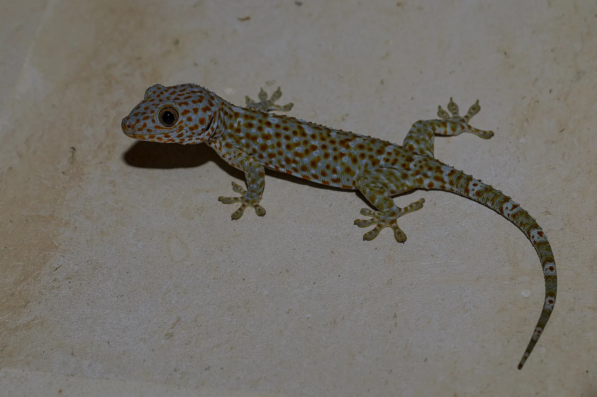
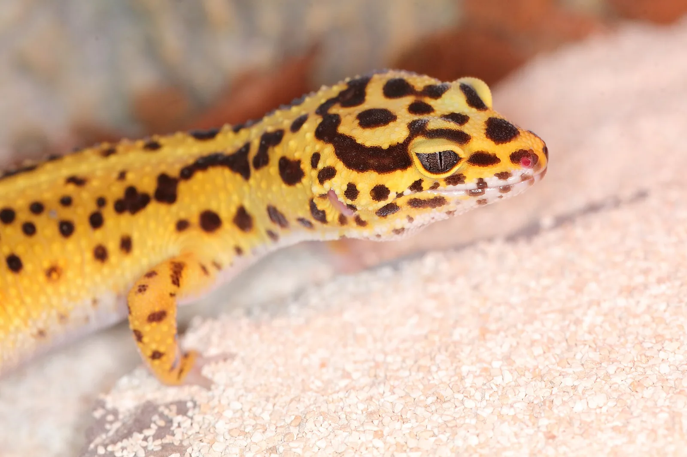
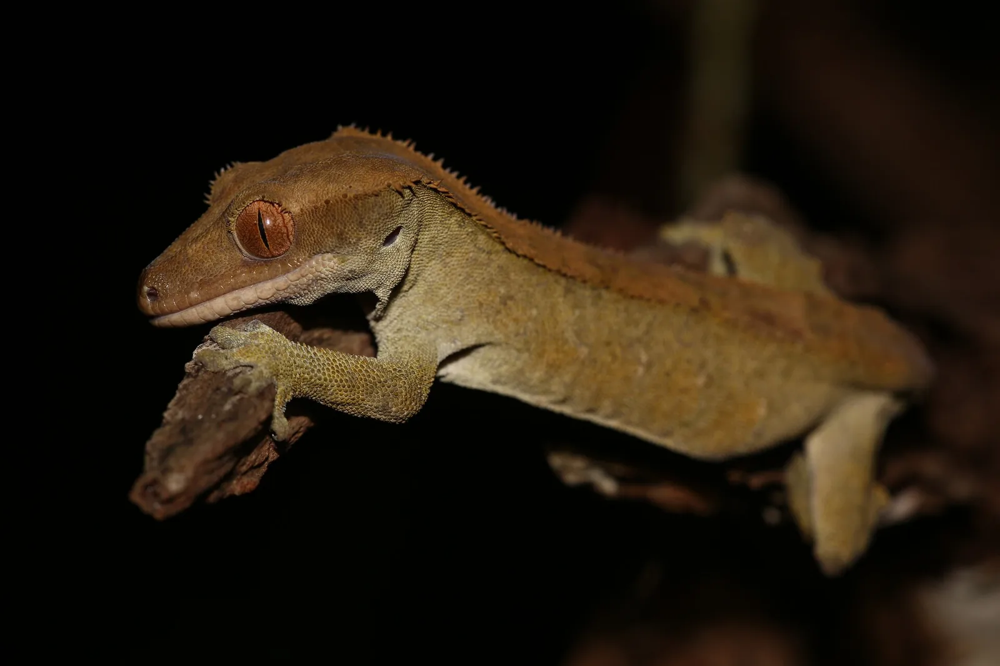
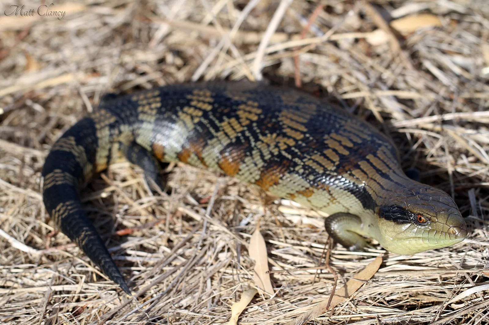
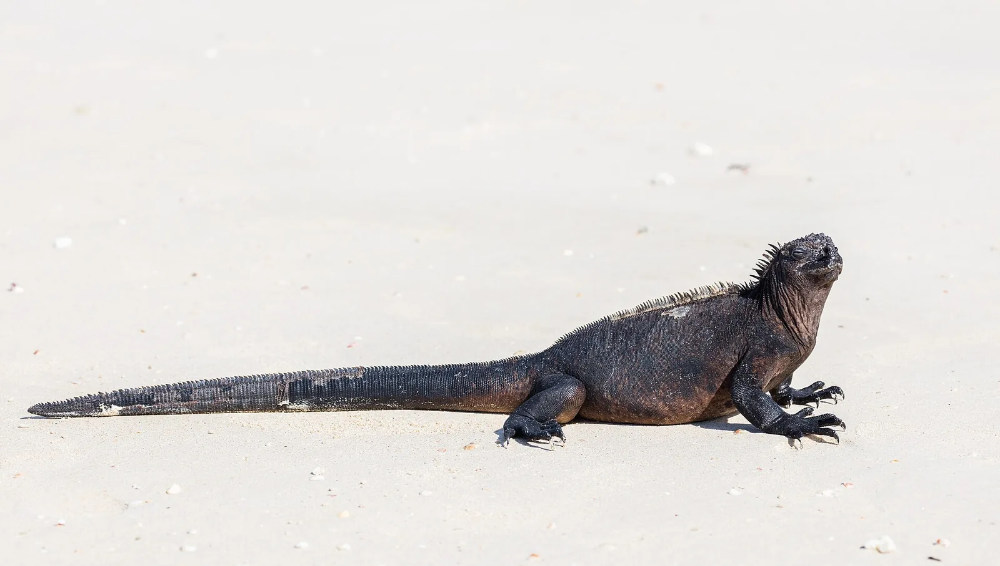
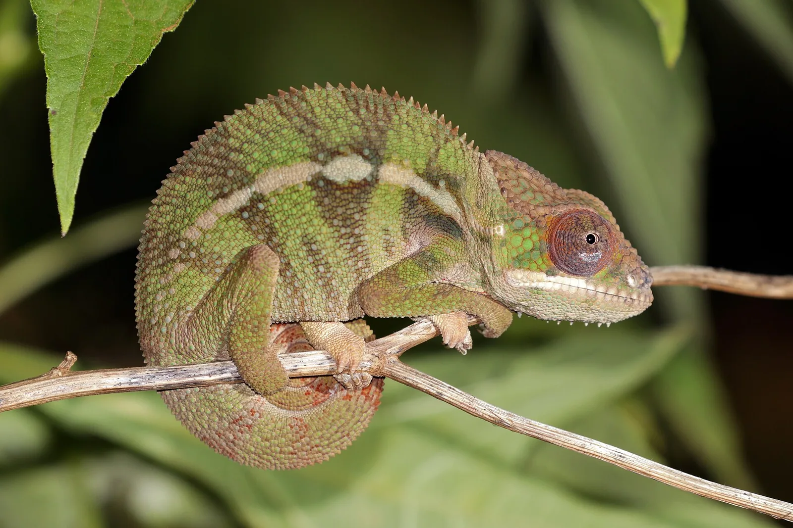
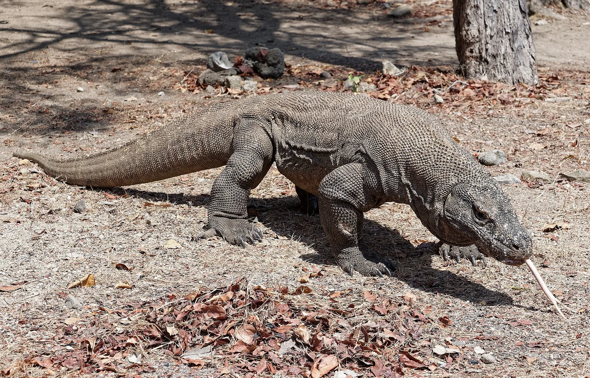

01
GEKKO
GECKO
GECKO

蛤蚧TOKAY GECKO · 东南亚
壁虎科 · 夜行 · 树栖森林里的
森林里的
蓝灰色守夜人
体长 25–35 cm昆虫与小型脊椎动物CITES 附录 II
LIVE SPECIMEN / 行为观察 001
DIGITAL NATURAL HISTORY
一种响亮、强壮，也经常被误解的夜行壁虎。

SPECIES COLLECTION
从壁虎到巨蜥，以科属、栖息地和行为方式重新认识“蜥蜴”。

没有吸盘、拥有可活动眼睑的地栖壁虎。
壁虎科 · 南亚荒漠
眼上方的冠状突起让它看起来拥有“睫毛”。
壁虎科 · 新喀里多尼亚
用醒目的蓝色舌头制造警告与视觉威慑。
石龙子科 · 澳大利亚
现存唯一会进入海洋觅食的蜥蜴。
鬣蜥科 · 加拉帕戈斯
变色不仅为了伪装，也是交流与体温调节。
避役科 · 马达加斯加
岛屿生态系统中的大型顶级捕食者。
巨蜥科 · 印度尼西亚当前筛选下暂无标本。
ANATOMY & ADAPTATION
选择一个结构，打开一页关于演化与适应的视觉注释。
BEHAVIOR LABORATORY
每个实验把一种生物学机制转化成可操作的规则。观察反馈、改变变量，再形成自己的解释。
HABITAT ATLAS
气温、湿度、昼夜节律与地表结构，共同决定一种蜥蜴如何生活。
树冠、树干与林下拥有不同温湿度。趾垫、保护色与夜间活动，让壁虎能够占据其他动物难以利用的表面。
CONSERVATION & COEXISTENCE
保护并不只发生在遥远的自然保护区，也发生在一次不开杀虫灯、一次温和转移和一次负责任的购买决定里。
许多壁虎捕食昆虫，也会成为蛇、鸟与小型哺乳动物的猎物；它们既是捕食者，也是能量传递的节点。
常见家栖壁虎通常不会主动攻击人。与任何野生动物一样，不触摸、不投喂并保持卫生，是更可靠的相处方式。
关闭室内灯、打开朝外门窗，或使用透明容器和硬纸片温和转移；不要抓尾，也不要使用粘鼠板。
减少夜间过度照明与广谱农药，为原生植被、石缝和落叶保留空间，让城市环境仍有可用的微栖息地。
购买前核查合法来源、物种保护等级和可追溯文件，不让一次冲动消费进入非法贸易链。
阅读 CITES 蛤蚧贸易资料 ↗